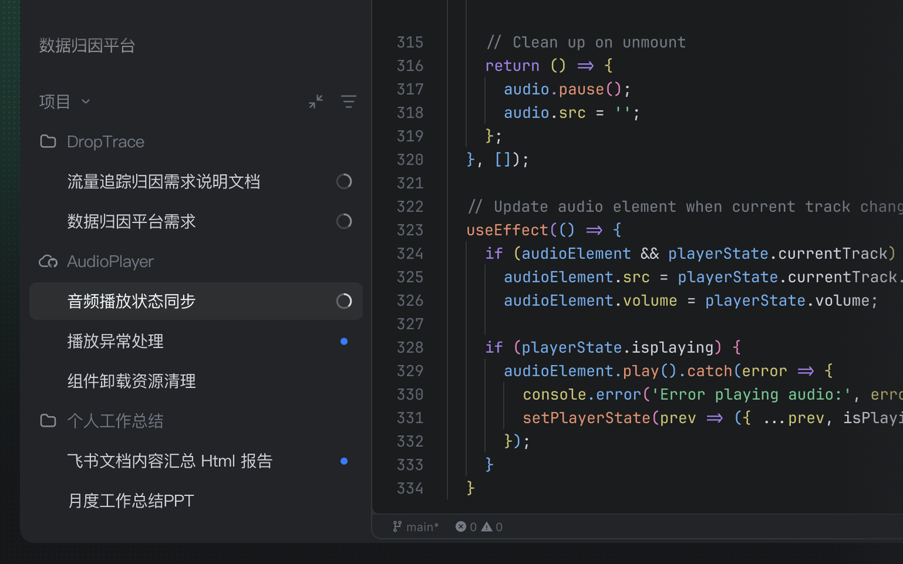
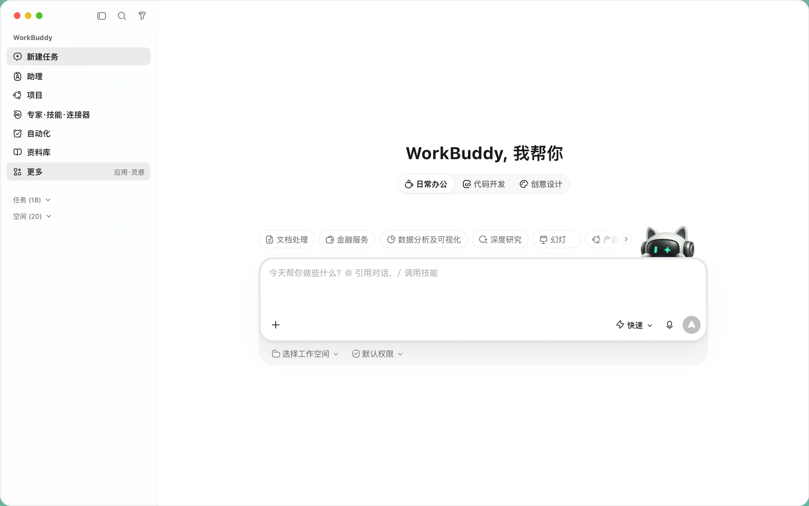
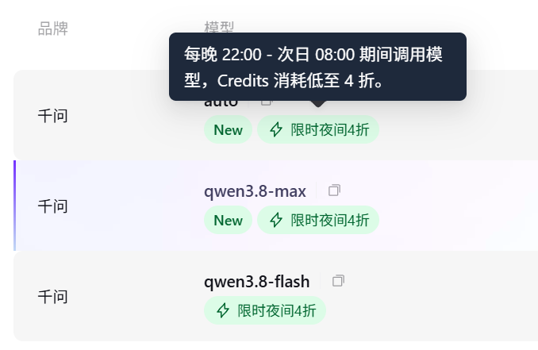

OFFICE AGENT / TRAE
办公类 Agent
使用技巧（Trae）
办公类 Agent 我选 Trae。它和 WorkBuddy 在功能和体验上几乎相差不大，差别在三点。
来源 · 飞书云文档《办公类 Agent 使用技巧（Trae）》
2026.11
01
为什么是 Trae
两个工具功能上几乎打平，选 Trae 是三个具体原因。
1.1
一个客户端里，Agent 和 IDE 都在
1.2
它天生长在飞书上
1.3
更喜欢 Trae 的 UI，这条是个人偏好
01 · 为什么是 Trae
TRAE · OFFICE AGENT
办公类 Agent 使用技巧（Trae）
03 / 19
一个客户端里，Agent 和 IDE 都在
需要 AI 接手时用 Agent，需要自己读代码改细节时回到 IDE——
同一个任务里来回切，不用换工具。
01
需要 AI 接手
用 Agent。
02
需要自己读代码改细节
回到 IDE。
TRAE · 一个客户端
Agent
IDE
⇄
同一个任务里来回切
不用换工具，也不用换窗口。
WORKBUDDY：要编程还得额外下载 CODEBUDDY
WorkBuddy
+
CodeBuddy
01 · 为什么是 Trae
TRAE · OFFICE AGENT
办公类 Agent 使用技巧（Trae）
04 / 19
它天生长在飞书上
云文档、妙记这些办公刚需，可以直接在工具里完成，不用在多个应用之间搬运。
01
云文档、妙记
在工具里直接完成。
02
文档写成云文档
手机上随手就能翻，不用回电脑找文件。
在 TRAE 里完成
云文档
办公刚需，直接在工具里完成。
妙记
同样在工具里完成，不用跨应用搬运。
手机
文档写成云文档，手机上随手就能翻。
01 · 为什么是 Trae
TRAE · OFFICE AGENT
办公类 Agent 使用技巧（Trae）
05 / 19
更喜欢 Trae 的 UI
个人偏好
先把定性说清楚：这是个人偏好，不是客观对比结论。
TRAE
WORKBUDDY


信息密度更克制，留白更足；深色主题下看着更舒服，界面元素不抢注意力。
同一类任务的另一种排布，用来对照同一件事在两个界面里的呈现。
02
怎么用
这一节是四条上手习惯加四条协作习惯，按讲述顺序排。
2.1
先装手机客户端
2.2
一个窗口管所有任务
2.3
绑飞书，不要绑微信
2.4
一个事情一个文件夹
2.5
所有改动都进 git
2.6
用云文档当工作台
2.7
HTML 能做四类东西
2.8
交付前一定要检查
02 · 怎么用
TRAE · OFFICE AGENT
办公类 Agent 使用技巧（Trae）
07 / 19
先装手机客户端
不要只在网页里用。手机随时在手边，有想法就能直接发过去。
01
手机客户端
不在电脑前，也能把想法发过去。
02
Trae 宝
绑上 IM 之后，不开电脑也能派活。
手机端 · Trae 宝
02 · 怎么用
TRAE · OFFICE AGENT
办公类 Agent 使用技巧（Trae）
08 / 19
一个窗口管所有任务
以会话为单位干活，任务一多必然两难：
开一个窗口做到底，上下文会被污染，越跑越慢；
开多个窗口并行，并发上去了，窗口太多人看不过来。
3–5
一个人能同时盯住的会话，大约只有 3 到 5 个。
两 难
01
开一个窗口做到底
上下文会被污染，越跑越慢。
02
开多个窗口并行
并发上去了，窗口太多人看不过来。
TRAE 宝 · 只开一个窗口
想到什么就发什么
↓
按问题和上下文判断
新建会话
交给历史会话
多条消息批量处理，不用等上一条跑完。
02 · 怎么用
TRAE · OFFICE AGENT
办公类 Agent 使用技巧（Trae）
09 / 19
绑飞书，不要绑微信
通知落在哪里，决定你多快看到结论。
微信
消息太杂
Trae 宝的通知会被群聊、订阅号和各种提醒盖过去，等你翻到往往已经晚了。
消息流
不绑
飞书
工作场景
消息密度低、重要性高，它的结论更容易被及时看到。
消息流
结论
绑飞书
02 · 怎么用
TRAE · OFFICE AGENT
办公类 Agent 使用技巧（Trae）
10 / 19
一个事情一个文件夹
相关文件放进同一个文件夹，一次把上下文给足。
01
上下文一次给足
不用一个个文件慢慢给。
02
界定工作范围
AI 不会误改其他文件。
本次会话范围
需求说明.md
数据.csv
旧稿/
一个事情 = 一个文件夹
02 · 怎么用
TRAE · OFFICE AGENT
办公类 Agent 使用技巧（Trae）
11 / 19
所有改动都进 git
不管是否涉及编程，都建议用 git 管理。
01
记录
每次改动都有记录。
02
对比
改了什么，可以直接对比。
03
回退
出错时回滚到上一版，比让 AI 重新做一遍更省。
v1
v2
v3
←
回退到上一版
改动留痕，出错可退；不必让 AI 从零重做。
02 · 怎么用
TRAE · OFFICE AGENT
办公类 Agent 使用技巧（Trae）
12 / 19
用云文档当工作台
好记性不如烂笔头：想到什么、定了什么、改了什么，先记进云文档。
事前
人
写目标和路线
动手之前，先把目标和路线写清楚。
事中
AI
记关键节点与偏离
AI 记录关键节点与偏离。
事后
AI 输出 · 人核
输出实际做法和结论
AI 输出实际做法和结论，人来核。
记录随手写，手机上也能补；隔几天让 AI 把这堆零散记录收拢一次，提炼出结论、待办和已定决策。
顺带解决：发链接而不是发文件、改动留痕可回溯，版本不会再乱。
02 · 怎么用
TRAE · OFFICE AGENT
办公类 Agent 使用技巧（Trae）
13 / 19
HTML 能做四类东西
HTML 能做的比大多数人以为的多。一个文件浏览器打开就能用，发给别人也只是发一个文件。
01
网页
落地页、数据报告、仪表盘。
02
PPT
浏览器全屏就是放映模式，比传统 PPT 好排版、好分享。
03
游戏
Canvas 加 JS 的小游戏，双击即玩。
04
视频
动画加时间轴在浏览器里播放，也可以录屏导出。
想快速做个小东西时，先想一下能不能直接用 HTML 做出来。
02 · 怎么用
TRAE · OFFICE AGENT
办公类 Agent 使用技巧（Trae）
14 / 19
交付前一定要检查
01
查幻觉
数字、事实、引用、链接都可能是编的。要求标明出处或给出引用链接，追不到来源的按未核实处理。
02
查路线 · 事前
先把技术路线和流程约定好，再让它动手。
03
查路线 · 事后
让它把实际采用的技术路线和流程输出出来，由人确认；和约定不一致，通常就是问题所在。
03
怎么省
三条都围绕同一件事：把 token 花在该花的地方。
3.1
简单问题交给 auto
3.2
复杂任务拆开做
3.3
长任务放到夜里跑
03 · 怎么省
TRAE · OFFICE AGENT
办公类 Agent 使用技巧（Trae）
16 / 19
简单问题交给 auto
简单问题套最强的模型，等于花高价做小事。
01
auto 按问题难度选模型
不必每次人工判断。
02
只在需要某种能力时手动指定
长上下文、特定推理强度。
03
让它报出这次实际用的模型
几次之后就能判断哪些场景不必再手动指定。
auto
按问题难度选模型
只在明确需要某种能力时，才手动指定。
03 · 怎么省
TRAE · OFFICE AGENT
办公类 Agent 使用技巧（Trae）
17 / 19
复杂任务拆开做
一次生成很难一次达标；反复修改时每一轮都要带着全部上下文
重新判断，改上几轮反而更贵。
01
每一步都能验收、早纠偏
错了只重跑一小段。
02
拆的是怎么切，夜里管的是什么时候跑
和放到夜里跑不冲突。
一次生成
改 1 → 改 2 → 改 3，每轮重带全部上下文
拆开做
1 一段 → 验收
2 一段 → 验收
3 一段 → 验收
03 · 怎么省
TRAE · OFFICE AGENT
办公类 Agent 使用技巧（Trae）
18 / 19
长任务放到夜里跑
每晚 22:00 至次日 08:00 期间调用模型，Credits 消耗低至 4 折。
只对带折扣标记的模型生效（截至 2026 年 11 月，具体以当期计费规则为准）。
01
适合压到这个时段
跑得久、中途不需要你盯着、结果第二天再看的：大范围重构、批量生成、整篇初稿。
02
一次连续跑完
把拆好的若干步连着跑，第二天只看结果、决定哪里返工。

截图：夜间调用折扣说明（截至 2026 年 11 月，以当期规则为准）
一句话结论
办公类 Agent 我选 Trae。
它和 WorkBuddy 在功能和体验上几乎相差不大，差别在三点——
一个界面里 Agent 和 IDE 都在
天生绑着飞书
一套能省 token 的用法
来源 · 飞书云文档《办公类 Agent 使用技巧（Trae）》 jb6epactfg.feishu.cn/docx/QTPndwbjnoUGlUxsuifc6BYxnmg
←
→
或
空格
翻页
·
全屏 F
这份讲义用方向键翻页，需要开启 JavaScript。